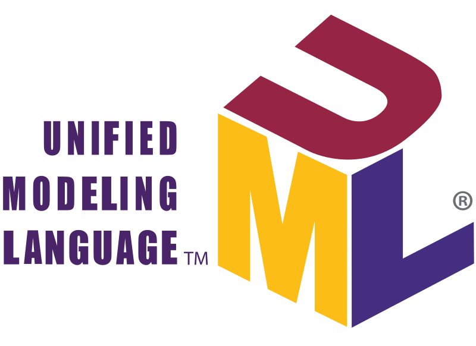

O que é o UML?
Um diagrama UML é uma forma de visualizar sistemas e softwares usando a Linguagem de Modelagem
Unificada.
Desenvolvedores criam diagramas UML para entender projetos,
arquitetura de código e propostas de implementação de sistemas de software complexos
|

|
O que é o diagrama de sequência?
O diagrama de sequência é uma solução dinâmica de modelagem em UML bastante usada
porque incide especificamente sobre linhas da vida, ou os processos e objetos que
vivem simultaneamente, e as mensagens trocadas entre eles para desempenhar uma função
antes do término da linha da vida. Junto com a nossa ferramenta de diagramação UML,
use este guia para aprender tudo sobre diagramas de sequência em UML.
.
Explicar as reponsabilidades do objeto, da linha do tempo, e como funciona a troca de mensagens?
Nos diagramas UML, como diagramas de sequência e comunicação, linhas de vida representam objetos que
participam de uma interação. Por exemplo, em um cenário financeiro, linhas de vida podem representar objetos
como um sistema bancário ou cliente. Cada instância em uma interação é representada por uma linha de
vida.
Uma mensagem é um elemento em um diagrama Unified Modeling Language (UML) que define um tipo específico de
comunicação entre instâncias em uma interação. Uma mensagem transporta informações de uma instância, que é
representada por uma linha de vida, para uma outra instância em uma interação.
Um diagrama de interação tem por responsabilidade mostrar a interação entre os objetos de um sistema por
meio de uma visão dinâmica. Essa interação entre objetos é representada por meio de mensagens.
O que são os Diagramas de Classe
Diagrama de classes é uma representação da estrutura e relações das classes que servem de modelo para
objetos. Podemos afirmar de maneira mais simples que seria um conjunto de objetos com as mesmas
características, assim saberemos identificar objetos e agrupá-los, de forma a encontrar suas respectivas
classes.
O que é uma classe?
Elemento abstrato que representa um conjunto de objetos. Nela contém a especificação do objeto, suas
características, atributos e métodos.
O que é um método?
É uma descrição de um conjunto de objetos que compartilham os mesmos atributos, operações, relacionamentos e
semântica.
O que é um atributo?
Ele define as características da classe, como visibilidade, nome, tipo de dados, multiplicidade, valor
inicial e propriedade.
A visibilidade pode ser pública (representada pelo símbolo +) ou privada (representada pelo símbolo -).
Quando ela é pública, outras classes podem ter acesso ao atributo e quando ela é privada, somente a própria
classe tem acesso.
O que é um encapsulamento de classe?
Encapsular uma classe significa restringir o acesso aos seus atributos, normalmente usando private ou
protected como modificador de acesso, além de permitir este acesso somente via métodos da própria classe.
Interação das classes
Na UML, um relacionamento é uma conexão entre elementos de modelo. Um relacionamento UML é um tipo de
elementos de modelo que inclui semântica em um modelo, definindo a estrutura e o comportamento entre os
elementos de modelo.
Os relacionamentos UML são agrupados nas seguintes categorias:
Linhas de Atividade: Representam o fluxo entre atividades
Associações: Indicam que as instâncias de um elemento de modelo estão conectadas a instâncias de outro
elemento de modelo
Dependências: Indicam que uma alteração em um elemento de modelo pode afetar outro elemento de modelo
Generalizações: Indicam que um elemento de modelo é uma especialização de outro elemento de modelo
Realizações: Indicam que um elemento de modelo fornece uma especificação que outro elemento de modelo
implementa
Transições: Representam alterações no estado
O que é um Diagrama de Entidade Relacionamento?
Um diagrama entidade relacionamento (ER) é um tipo de fluxograma que ilustra como “entidades”,
por exemplo, pessoas, objetos ou conceitos, se relacionam entre si dentro de um sistema.
|
|
Referências bibliográficas:
https://www.lucidchart.com/pages/pt/o-que-e-diagrama-de-sequencia-uml
https://www.ibm.com/docs/pt-br/rsm/7.5.0?topic=uml-sequence-diagrams
https://www.devmedia.com.br/artigo-engenharia-de-software-15-uml-diagrama-de-sequencias/13820#:~:text=O%20Diagrama%20de%20Sequ%C3%AAncias%20%C3%A9%20um%20Diagrama%20de%20Intera%C3%A7%C3%A3o&text=Um%20diagrama%20de%20intera%C3%A7%C3%A3o%20tem,representada%20por%20meio%20de%20mensagens
https://www.significados.com.br/diagrama-de-classes/
https://www.ibm.com/docs/pt-br/rsas/7.5.0?topic=structure-class-diagrams
https://www.lucidchart.com/pages/pt/o-que-e-diagrama-de-classe-uml
https://sae.unb.br/cae/conteudo/unbfga/oo/new_encapsulamento.html#:~:text=Encapsular%20uma%20classe%20significa%20restringir,via%20m%C3%A9todos%20da%20pr%C3%B3pria%20classe